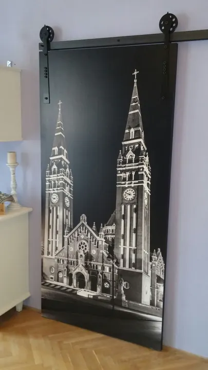
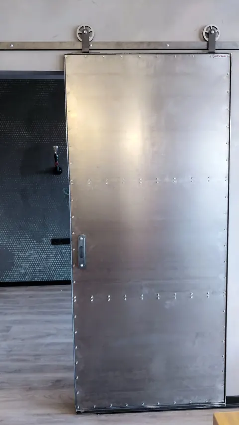
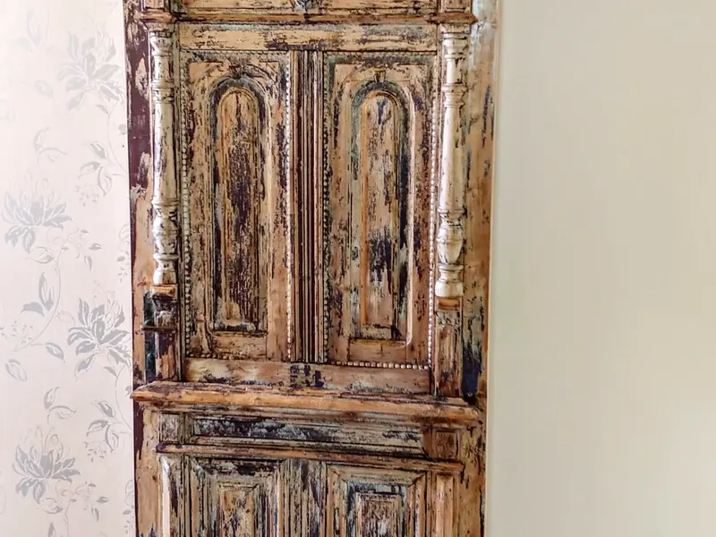
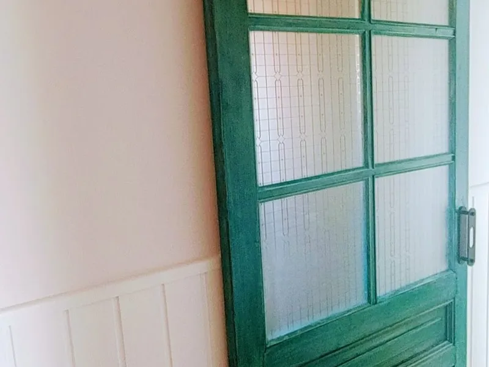
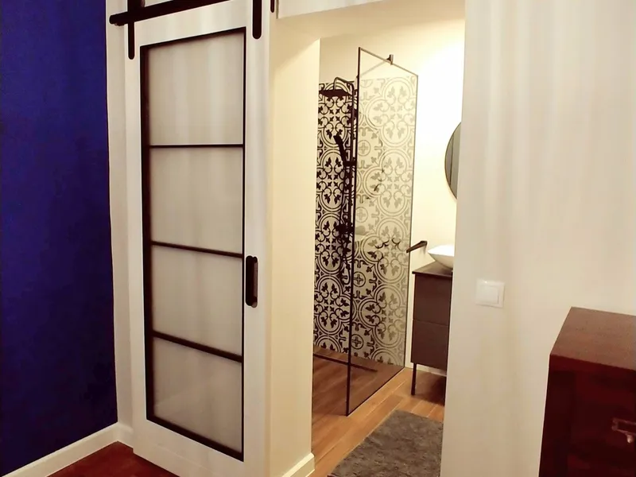

1 / 6
Válaszd ki, melyik áll hozzád a legközelebb.
Szemléltető kép. A pontos látványtervet megrendelés után kapod.





A képernyőn látott szín eltérhet a valóditól.
Ehhez a 2. lépésben tölts fel egy fotót a nyílásról. Fotó feltöltése
1 munkanapon belül keresünk. Küldtünk egy visszaigazoló e-mailt is.